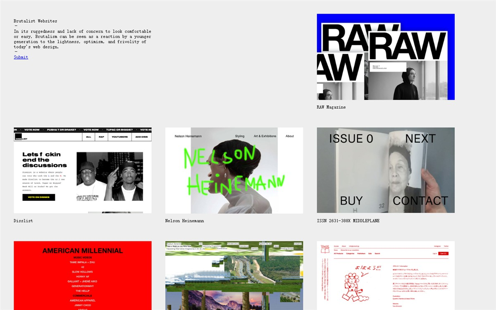
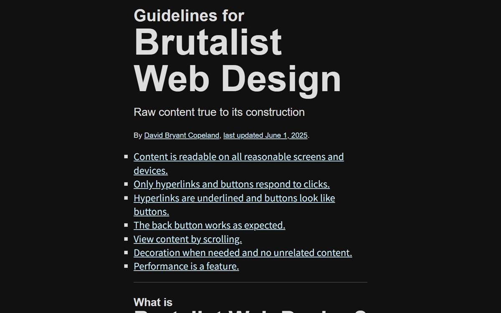

我给自己造工具，然后把造的过程摊开。这一页是自检清单，不是简介——简介适合写在名片上， 自检清单适合贴在机器旁边。
01谁在打铁#
给 DeepSeek Harness 写插件。插件之外，大部分时间和在工具链本身较劲：加载顺序、谁管渲染、谁管登录、谁该在登录那一层失败。 这些机器上跑的几个东西，都是这么长出来的。
写完的东西丢到 npm、源码挂 GitHub。没有团队、也没有排期——发布节奏是「自己先用顺了再说」。 所以这里的东西都很少：只做一件小事，做到自己每天都离不开。窄不是谦虚，是能力范围。
02这台机器#
| 机器 | 一台 Windows 工作站，一个人用 |
|---|---|
| 显卡 | RTX 4060 —— 显像管写画面的帧就在这里合成 |
| 运行时 | Node.js 24；浏览器用 Edge 与 Chrome |
| 终端 | Windows PowerShell（5.1，不是 7） |
| 语言 | JavaScript · GLSL · PowerShell |
| 字体 | 系统自带的：Courier New、Consolas、宋体、黑体。一个都不下载 |
03七条怎么兑现#
七条抄自 brutalist-web.design。上一版把它们逐条照着做了一遍； 这一版换了张纸，工序没变，只是把「怎么兑现」重新写了一遍——写不出来的就不算兑现。
| 规矩 | 这一版怎么兑 |
|---|---|
| 1 可读 | 320 到 2560 都测过；正文 15 px、行高 1.66；中文用宋体回退，等宽只当语气。窄屏表格整行变方块，列头写在值前面。 |
| 2 只有链接能被点 | 零 JavaScript。没有整块片的跳转、没有假按钮、没有「点这里展开」。 |
| 3 链接有下划线 | 沿用浏览器默认的蓝与紫，只加一句 hover 反白（黑底白字）。站上没有表单，也就没有按钮——不造假按钮。 |
| 4 后退键 | 没有 hash 路由、没有重定向、没有拦 history。站内跳转就是普通链接。 |
| 5 靠滚动 | 长内容不分页、不折叠正文，也不做「阅读更多」。滚轮往下，就是全部。 |
| 6 该装饰才装饰 | 齿轮孔、绿横道、机头条、方章、闪烁光标——每样都在说「这是打印机吐出来的」，没有广告位和弹窗。 |
| 7 快 | 手写 HTML 加一份样式表，没有字体包、没有图标库、没有统计脚本；外部请求 0 个。 |
04参考墙#
不是截图，是转述：从这几家各借了一样东西。格子排法照 brutalistwebsites.com 那个 400×250 的列表来——它整站的样式表只有六行。截图在下面「现场」。
-
Brutalist Websitesbrutalistwebsites.com
等宽字、灰底、400×250 的方块、不修图。它证明：把东西排整齐、不修图，就够狠了。
-
Brutalist Web Designbrutalist-web.design
七条规矩的出处。核心一句：网站不是杂志，也不是应用；它是给访客读内容的。它自己的暗色是一层类名映射，不是滤镜。
-
2000 年的个人站宋体 · 黑体 · 表格
宋体正文、黑体标题、表格排版、访客计数器、施工中。这一版把它们搬回来，只把表格换成语义标签。
-
2010 年代的反 UX大字 · 硬边 · 不留白
借它的站姿，不借它的恶意：大字压满、不留缓冲，但不骗点击、不藏内容、不拿滚动条当进度条。
-
连续打印纸绿横道 · 齿轮孔 · 机头条
机房时代真正的大宗输出：白纸、两排孔、一道绿、机头在顶上打页眉。这一版的材料就是它。
-
Neocities / Wiby还活着的老网页
老网页没死，只是不流行了。手写 HTML 的个人站从来不需要平台批准。
现场
墙上那六格是转述，下面是证据：2026‑11‑07 用无头 Edge、1440 宽截的两张首页。 上一张是这类站的出处——等宽字、灰底、400×250 的方块排成三列；下一张是七条规矩的出处，它自己就穿着一身暗色。


两张都是 JPEG 压过的证据，不是装饰：不转灰度、不叠纸纹，是这几张纸上唯一不跟着系统配色走的东西。
05皮下#
看得见的部分是打出来的，看不见的部分是攒出来的。下面这些都不显眼，缺一块就开始骗人。
| 项 | 做法 | 怎么验 |
|---|---|---|
| 语义 | header/nav/main/figure/dl；每张纸一个 h1，标题不跳级 | 关掉样式表看一遍 |
| 键盘 | 纸首「跳到正文」；:focus-visible 有虚线轮廓；没有 tabindex 造假的可点区域 | 只用 Tab 走一遍 |
| 对比度 | 正文与纸 18:1 上下；次级文字 7:1；红章只出现在非正文处 | F12 取色算 |
| 暗色 | prefers-color-scheme: dark 下纸反成黑纸，绿道淡下去，链接换亮蓝；照片与证据图不反相 | 系统切深色再刷新 |
| 打印 | 齿轮孔、菜单、机头条、方章不进纸；外链后面补真实地址，纸上点不了还能抄 | Ctrl+P 预览 |
| 窄屏 | 320 / 390 / 820 / 1440 / 2560 实测，scrollWidth 与视口同宽；表格整行变方块 | 把窗口拖窄 |
| 动效 | 只有标题后面那个光标在闪；prefers-reduced-motion 下不动 | 系统里开「减少动态效果」 |
| 体积 | 四张纸加一份样式表；首页连样式表带图标不到 20 KB | 查看源代码 / Network 面板 |
| 请求 | 全部同目录，没有 CDN、没有外链字体；断网刷新照开 | 断网刷新 |
06更新记录#
| 日期 | 版本 | 改了什么 |
|---|---|---|
| 2026‑11‑07 | v5 | 推倒重做：连续打印纸。等宽字、齿轮孔、绿横道、机头条、方章、闪烁光标；表格整行可堆叠；暗色跟着系统走 |
| 2026‑11‑07 | v4.1 | 水泥浇筑版补上暗色、每节加 § 永久链接、参考墙下补两张现场截图（已废，在 git 里） |
| 2026‑11‑07 | v4 | 水泥浇筑：Impact/黑体巨题、宋体正文、纸纹、安全色、骑缝章、施工带（已废） |
| 2026‑11‑07 | v3 | 拆掉报纸版式，改成手搭：默认字体、方框、表格、虚线（已废） |
| 2026‑11‑07 | v2 | 报纸底、巨编号、危险红（已废） |
| 2026‑11‑07 | v1 | 第一版，三页（已废） |
| 2026‑11‑07 | — | 站点挂上 GitHub Pages |
07怎么找我#
- GitHub —— github.com/yuanzephyr920-oss
- npm —— dsh-idle-crt · dsh-om-messiah
- 问题与需求 —— 去任意仓库开一条 Issue，比邮件快
版权归作者就是版权归作者。七条规矩原文属于 David Bryant Copeland，CC BY-NC-SA 4.0；这里的做法是自己的。